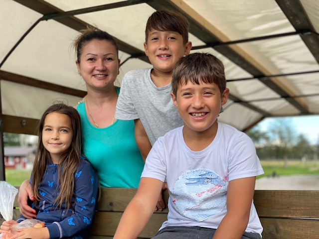
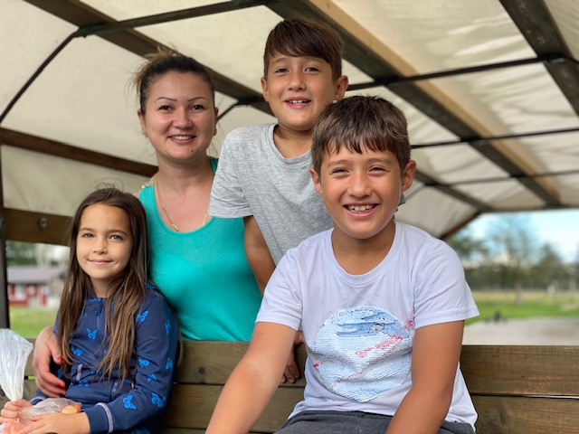
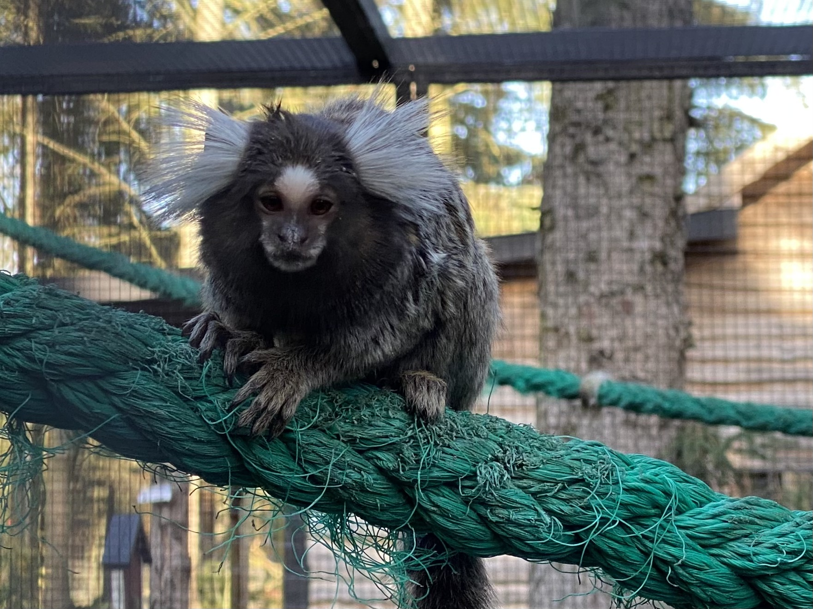
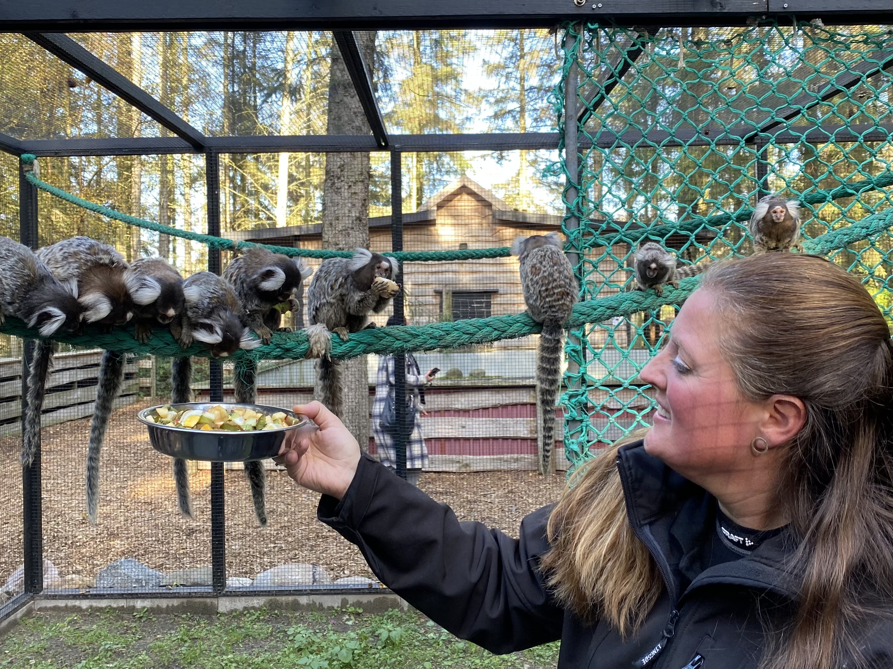
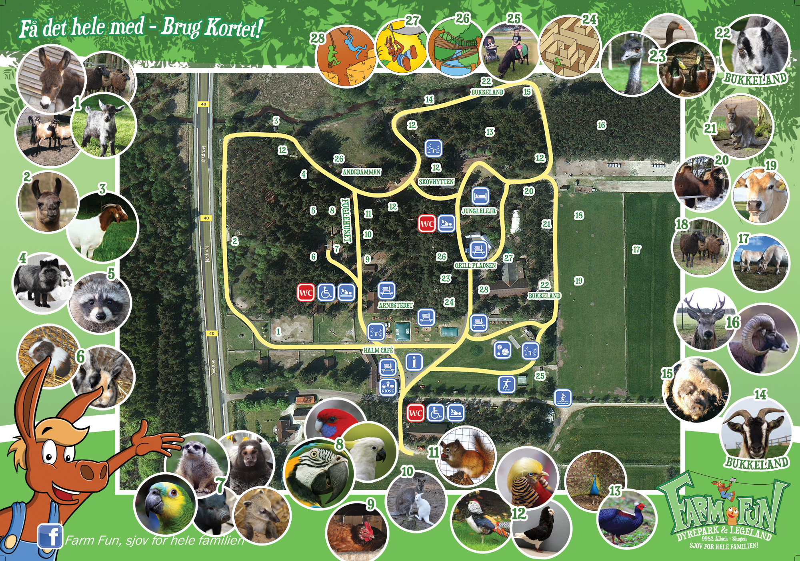
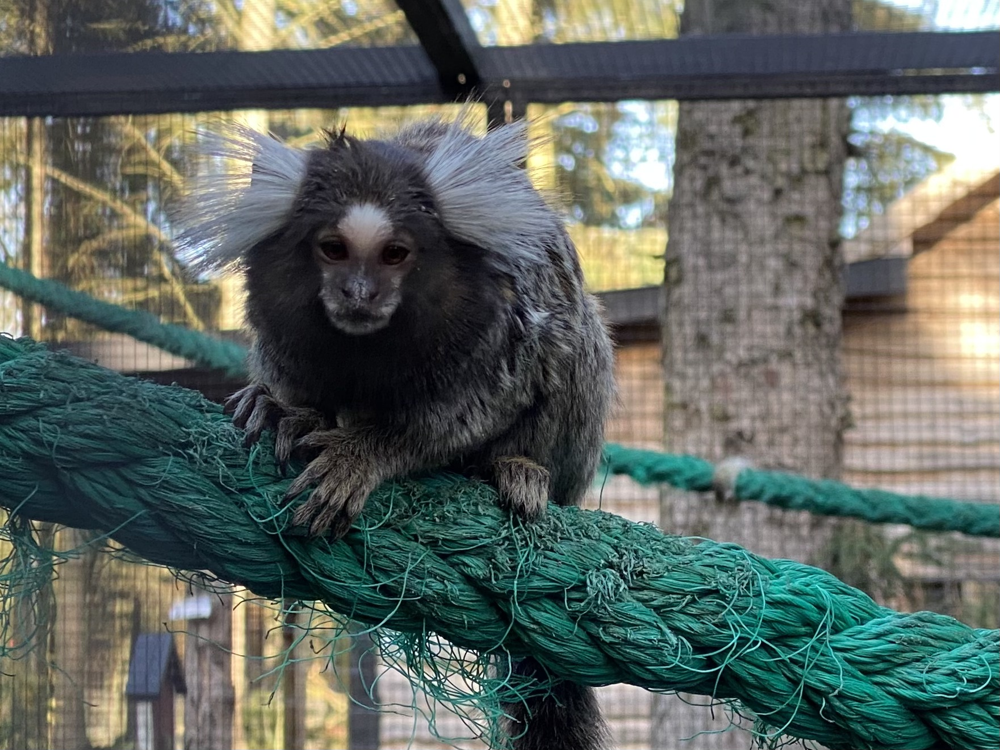
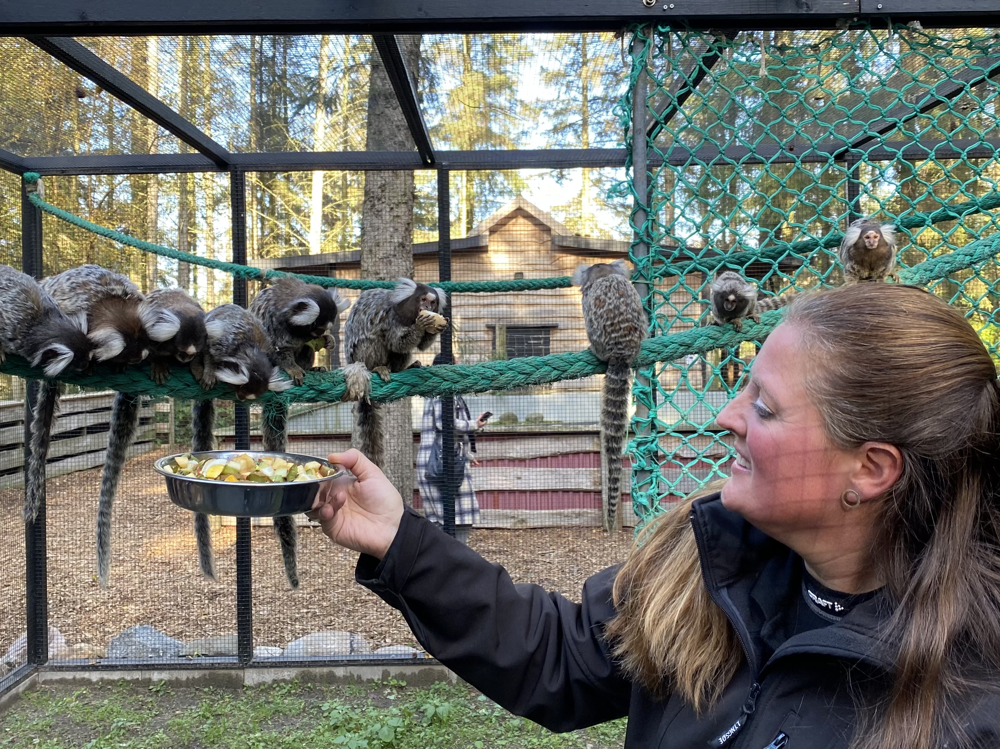
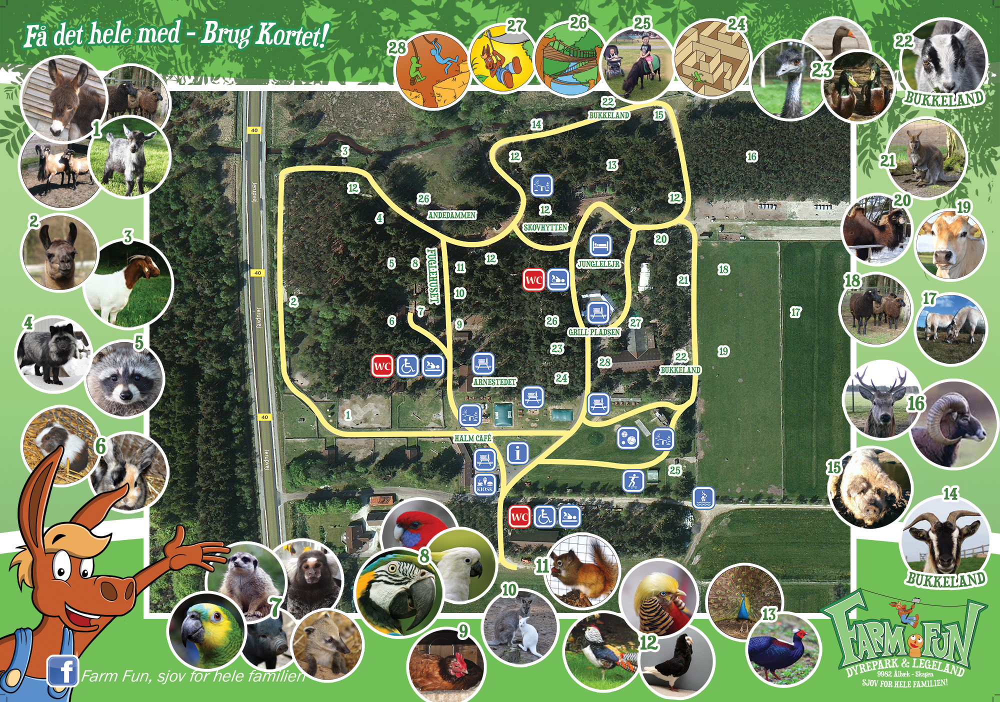

Velkommen!
Farm Fun ligger i et naturskønt område med skov, marker og børnevenlige strande. Siden 1996 har vi været en elsket dyrepark og legeland, kendt for vores åbne og frie atmosfære. Her kan I opleve en spændende blanding af eksotiske dyr og bondegårdsdyr, og vi har et væld af aktiviteter både indendørs og udendørs, der vil begejstre børn i alle aldre.
Hos os kan børnene lege gammeldags lege og komme tæt på dyrene – mange af dem kan de endda klappe. Farm Fun er et sted med masser af frihed, åbenhed og plads til masser af sjov og oplevelser!
Hvis du mangler informationer, kan du trykke på knappen nedenunder, for at blive klogere på praktiske informationer.
Dyrelivet i parken
Farm Fun har en masse forskellige dyr i parken - fra papegøjer og høns til vaskebjørne og geder.
 

 





Farm Fun for store og små!
æggejagt i påsken
Kom og oplev vores spændende æggejagt fredag i påsken. Her vil der være mulighed for de yngste kan udforske parken gennem vores unikke jagt efter påskeæg i parken!
æselridning for de yngste
Hver lørdag vil alle børn have mulighed for at en enestående oplevelse ved en ridetur på vores æsel. Æslet vil give børnene en fantastisk tur gennem parken, hvor der også vil være rig mulighed for at kæle med æslet.

Lækker mad i grillen
Efter en hel dag med sjov og oplevelser i parken, kan i stille sulten i vores lækre kiosk. Her vil der være retter til både de største og mindste, samt muligheder for snacks til resten af dagen.
Sikkerhed i Parken
Her hos Farm Fun sætter vi sikkerheden i fokus. Vi forstår at det kan være bekymrende at sende sine børn ud på forskellige aktiviteter med større dyr og aktiviter, men hos os kan du trygt slappe af. Vores erfarne medarbejdere tager hensyn for til at skabe en tryg og sikker oplevelse for alle vores gæster.
Alle vores aktiviteter og dyreoplevelser er planlagt og overvåget for at sikre, at de foregår under de sikreste forhold. Vores medarbejdere er trænet i at håndtere dyr med omhu og faglighed, så du som forælder kan være helt rolig.
Vi ønsker, at både børn og forældre får den bedste oplevelse, og derfor er vi altid tilgængelige, hvis du har spørgsmål eller bekymringer. Du er altid velkommen til at kontakte os – vi er her for at hjælpe og sikre, at dit besøg hos Farm Fun bliver fyldt med glæde og tryghed.
Få børnene væk fra skærmen, og ud i naturen!
Sidder dine børn limet fast til skærmen, og mangler I et hyggeligt sted at tage hen som familie? Så er Farm Fun det perfekte valg.
Hos Farm Fun har vi masser af sjove aktiviteter og spændende dyr der giver en lærerig oplevelse. Børnene vil elske at komme tæt på dyrene og lære om deres liv på en måde, der er både sjov og informativt.
Vi tilbyder guidede ture, hvor I kan møde dyrene helt tæt på. Vores erfarne guider sørger for, at børnene får indblik i dyrenes vaner og livsstil. Det er en fantastisk måde at lære på.
Så tag en pause fra skærmene, og kom ud i naturen. Farm Fun er det ideelle sted at skabe nye minder som familie, lære noget nyt og have det sjovt. Vi glæder os til at byde jer velkommen!
Det her er Farm Fun
Hos Farm Fun er der meget mere at opleve, end man umiddelbart kan se udefra. Her kan I bruge timer på at komme tæt på dyrene og nyde vores mange udfordrende legeaktiviteter. Der er rig mulighed for at finde et sted under tag i dårligt vejr, og på varme dage kan I tage en tur til den nærliggende strand.
Typer dyr
Dyr i alt
aktiviteter
M2 Areal